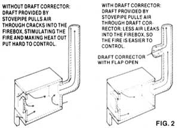

The Blunts' draft-spoiler system. A draft corrector is installed in the first vertical section of stovepipe leading from the stove, an elbow replacing the swiveling flap. A joint of slovepipe runs to within three inches of hte floor and the swiveling flap or a damper is inserted in the bottom of the pipe. Replacement air enters through a hole cut in the floor under the stove.